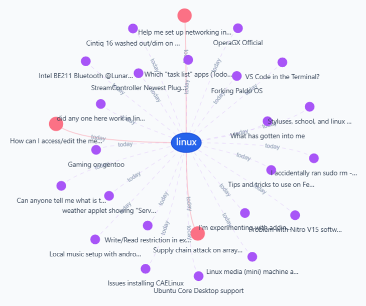
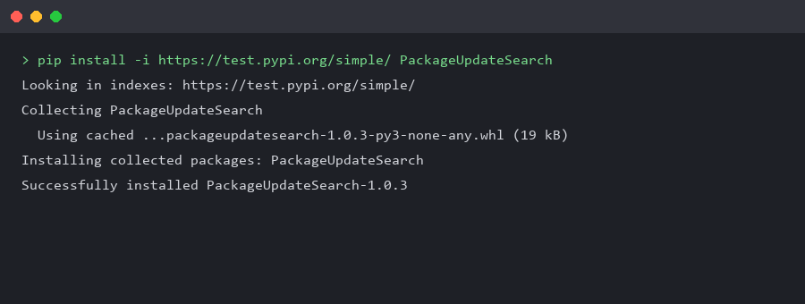
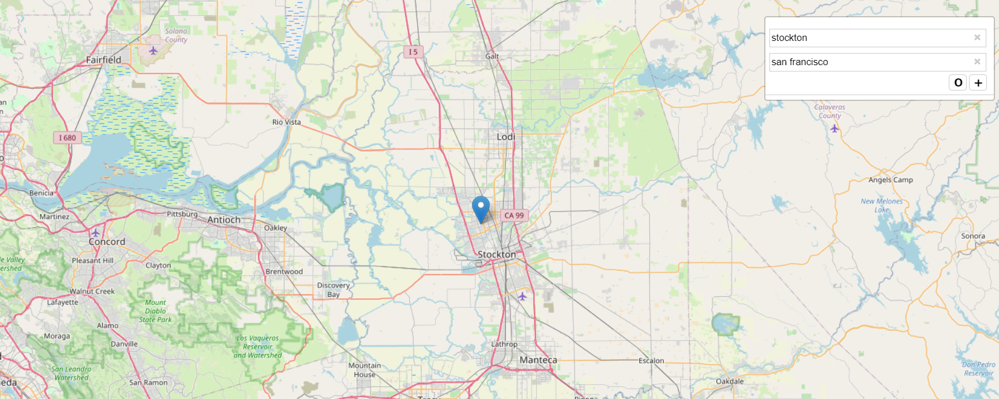
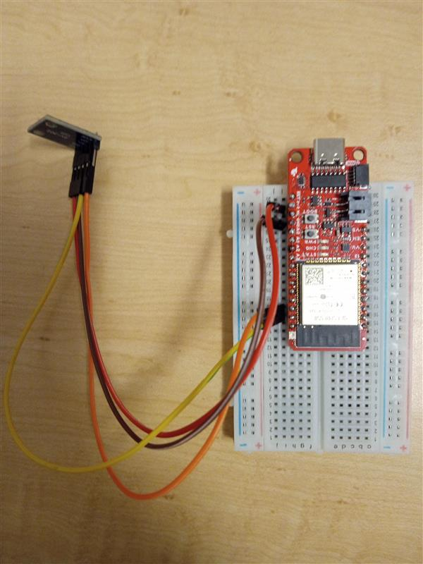
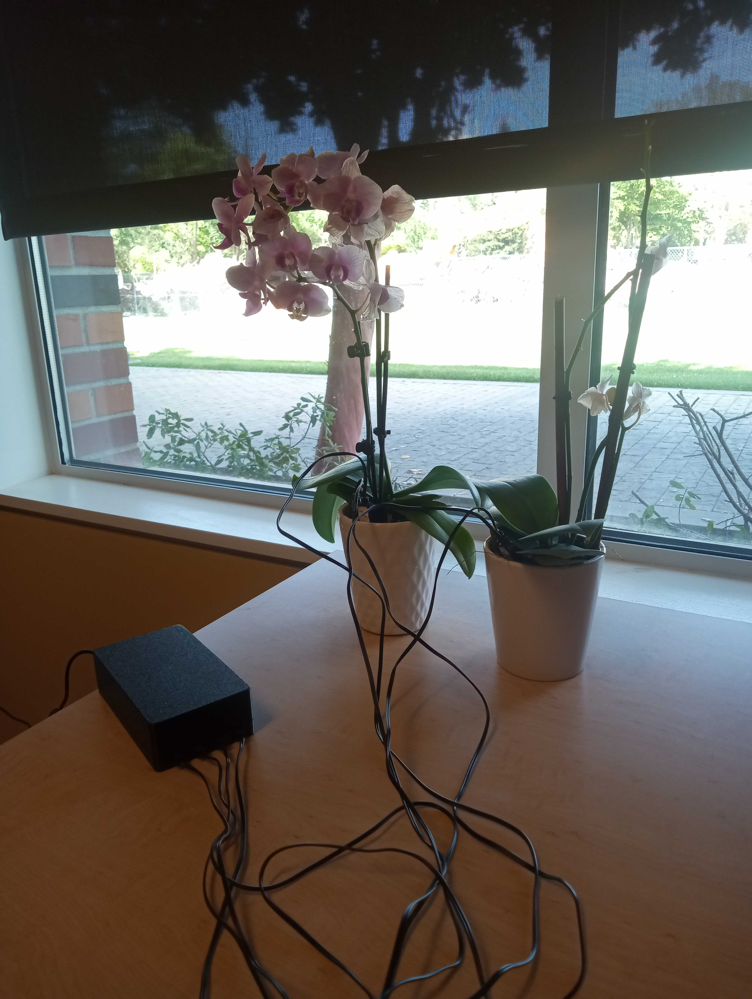
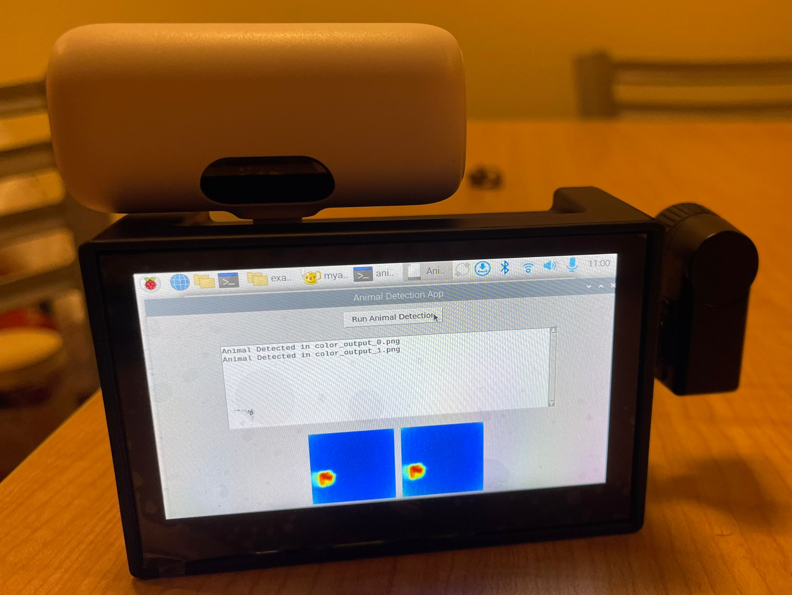
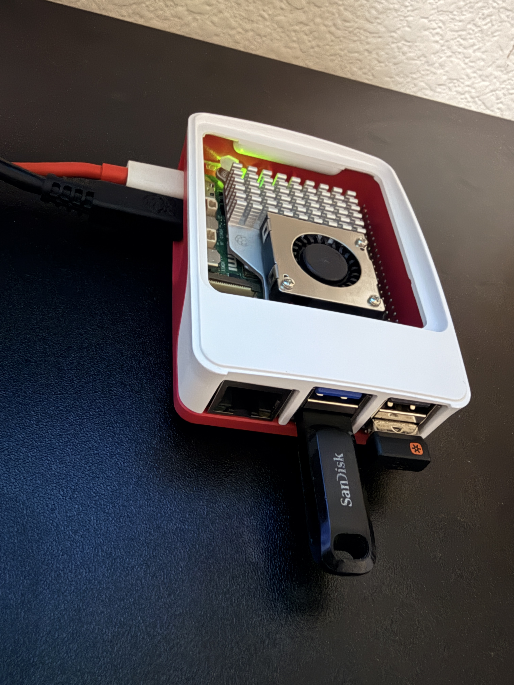

Projects and Prototypes

Open-source framework tracking software updates, CVEs, and community discussion signals across software ecosystems, exposed via a public API and live dashboard.
GitHub
Python package and CLI that analyzes a user's software stack and suggests fixes for reported issues, with an AI agent mode for natural-language prompts. Published on TestPyPI via pip.
GitHub
Client/server navigation system prototype, with separate browser client, bus client, and backend app/database services.
GitHub
IoT light sensor that measures ambient light levels and sends readings to connected systems for monitoring or automated control.
GitHub
Helps track plant watering times and sends reminders so houseplants don't get forgotten.
GitHub
Offline AI system that detects small animals sheltering under cars using a thermal camera, to prevent injury before a vehicle starts. 97.83% detection accuracy, processed locally in 28 seconds.
GitHub
AI-enhanced reinforcement learning system for real-time dynamic traffic routing in software-defined networks for IoT edge environments.
GitHubAgentic Software Engineering
- Sep 24, 2026 Software Update Questions and Answers (RISE Fall 2026) Research Seminar and Information Session Resources: Slides (HTML)
- May 2026 An Adaptive Multi-Agent RAG Architecture for Software Ecosystem Update Monitoring ACM CAIS Workshop on Agentic Software Engineering Resources: Paper · Paper (PDF) · Poster (PDF) · Code · Data
- Apr 1, 2026 Retrieval-Augmented Generation (RAG) Based Semantic Retrieval (OkIP CAIF 2026) Resources: Paper (PDF) · Slides (HTML) · Prototype · Code · Data
- 2026 Agentic AI for Mobile App Development & Software Engineering Resources: Slides (HTML)
Internet of Things
- 2026 Real-Time Dynamic Routing in Software-Defined Networks with Reinforcement Learning for IoT Edge Networks Procedia Computer Science, Vol. 280, pp. 921–928 Resources: Paper (PDF) · Code
- 2025 AniLarm: AI for Small Animal Detection Under Cars Using Thermal Camera 2025 IEEE Conference on Artificial Intelligence (CAI), pp. 741–746 Resources: Paper (PDF) · Code
- 2025 Poster: Securing IoT Edge Devices: Applying NIST IR 8259A to a Realtime Animal Detection System NDSS Symposium, Workshop on Security and Privacy in Standardized IoT (SDIoTSec) Resources: Paper (PDF) · Poster (PDF) · Code
- 2025 IoT Software Updates: User Perspectives in the Context of NIST IR 8259A NDSS Symposium, Workshop on Security and Privacy in Standardized IoT (SDIoTSec) Resources: Paper (PDF)
Modeling Software Ecosystems
- Apr 23, 2025 Automated UML Visualization of Software Ecosystems: Tracking Versions, Dependencies, and Security Updates (EDI40 2025) Resources: Paper (PDF) · Slides (HTML) · Prototype
- Apr 18, 2025 Impact-Driven Software Update Prioritization (RISE Spring 2025) Research Seminar and Information Session Resources: Slides (HTML)
- Apr 23, 2024 Triage Software Update Impact via Release Notes Classification (EDI40 2024) Procedia Computer Science, Vol. 238, pp. 618–622. Logistic Regression reached 99% accuracy on Security Risk and 88% accuracy on Component Type. Resources: Paper (PDF) · Dataset · Labeling code
- 2023 Maintenance Cost of Software Ecosystem Updates Procedia Computer Science, Vol. 220, pp. 608–615 Resources: Paper (PDF)
- 2020 Software Release Patterns: When Is It a Good Time to Update a Software Component? 3rd International Conference on Emerging Data and Industry 4.0 (EDI40), Procedia Computer Science, Vol. 170, pp. 618–625 Resources: Paper (PDF)
Clinical & Health Informatics
- 2016 A Viewpoint of Security for Digital Health Care in the United States: What's There? What Works? What's Needed? E-Health and Telemedicine: Concepts, Methodologies, Tools, and Applications, pp. 1245–1263 Resources: Paper (PDF)
- 2013 An Integrated Model for Patient Care and Clinical Trials (IMPACT) to Support Clinical Research Visit Scheduling Workflow for Future Learning Health Systems Journal of Biomedical Informatics Resources: Paper (PDF)
- 2010 Secure, Obligated and Coordinated Collaboration in Health Care for the Patient-Centered Medical Home AMIA Annual Symposium Proceedings Resources: Paper (PDF)
- 2009 An Integrated Ontology Framework for Health Information Exchange SEKE, pp. 575–580 Resources: Google Scholar
Secure Software Engineering
- 2014 An Integrated Secure Software Engineering Approach for Functional, Collaborative, and Information Concerns Handbook of Research on Emerging Advancements and Technologies in Software Engineering Resources: Paper (PDF)
- 2012 A Security Framework for XML Schemas and Documents for Healthcare IEEE International Conference on Bioinformatics and Biomedicine Resources: Paper (PDF)
- 2011 A Framework for Secure, Obligated, Coordinated and Dynamic Collaboration that Extends NIST RBAC Doctoral dissertation, University of Connecticut Resources: Paper (PDF)
- 2011 Leveraging UML for Security Engineering and Enforcement in a Collaboration on Duty and Adaptive Workflow Model that Extends NIST RBAC IFIP Annual Conference on Data and Applications Security and Privacy (DBSec), pp. 293–300 Resources: Paper (PDF)
- 2010 Integrating Access Control into UML for Secure Software Modeling and Analysis International Journal of Secure Software Engineering Resources: Paper (PDF)
- 2010 Improving the Information Security of Collaborative Web Portals via Fine-Grained Role-Based Access Control Handbook of Research on Web 2.0, 3.0, and X.0 Resources: Paper (PDF)
- 2009 Emerging Trends in Health Care Delivery: Towards Collaborative Security for NIST RBAC IFIP Annual Conference on Data and Applications Security and Privacy Resources: Paper (PDF)
- 2008 Axon: An Adaptive Collaborative Web Portal International Workshop on Adaptation and Evolution in Web Services Resources: Google Scholar
Ontology & Model-Driven Engineering
- 2011 Towards Software Design Process for Ontologies International Conference on Software and Intelligent Information Resources: Google Scholar
- 2007 Data Verification using Model-Driven Architecture MoDeVVa Workshop Resources: Google Scholar